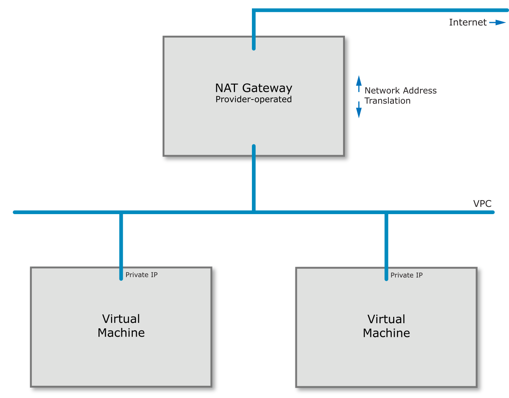
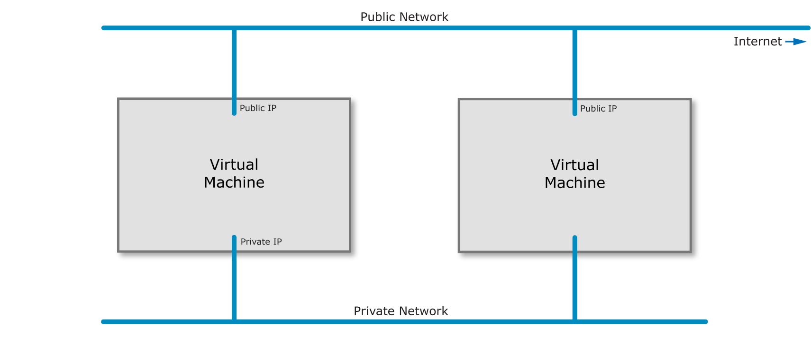
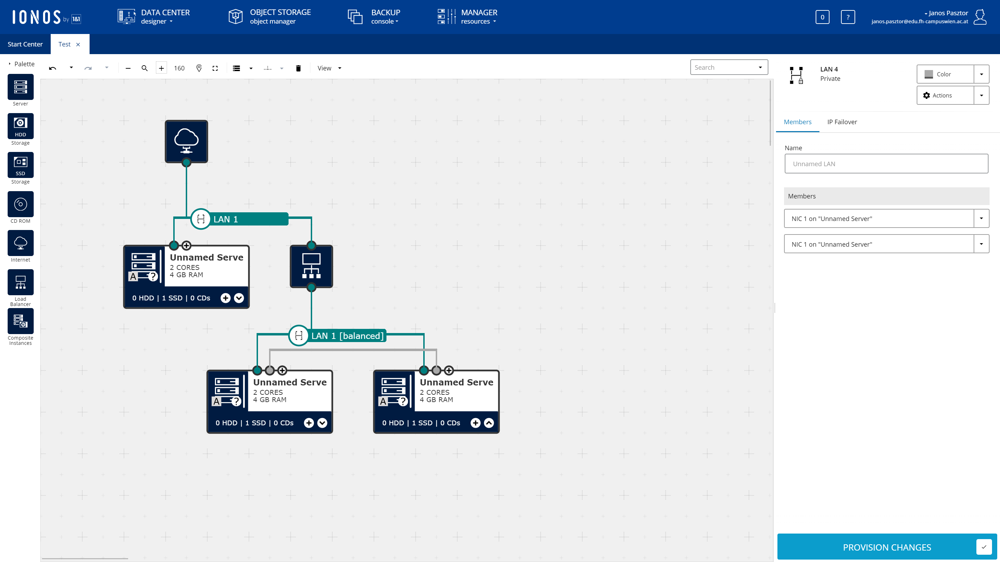
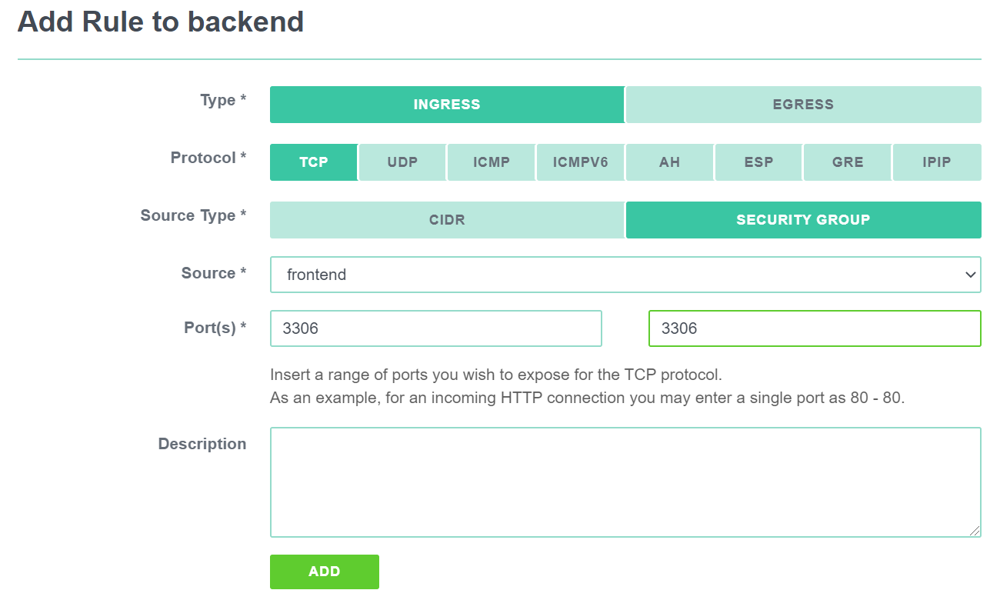
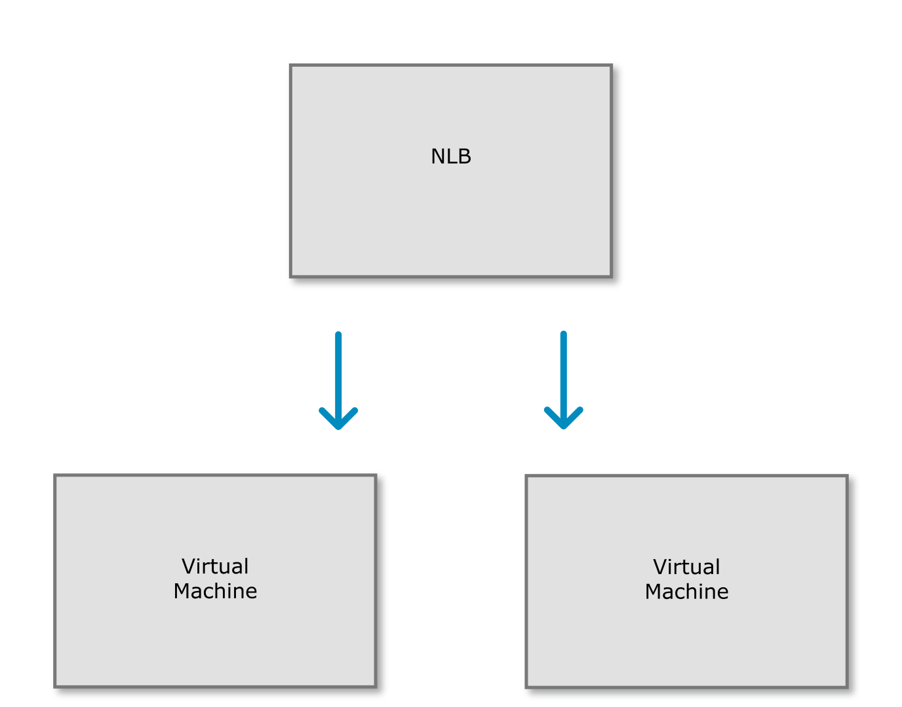

Infrastructure as a Service
Infrastructure as a Service, or IaaS is a service offering by most cloud providers that provides virtual machines and the accompanying infrastructure as a service. This lecture will discuss the details of how an IaaS service is built.
Virtual machines#
In a hurry?
Modern CPUs have several operation modes:
- Ring 3 (unprivileged) runs the application
- Ring 0 runs the operating system kernel
- Ring -1 runs the hypervisor managing serveral kernels
- Ring -2 runs the Intel Management Engine
Other components are responsible for virtualizing other hardware components. For example, the IOMMU is responsible for virtualizing direct memory access between applications and hardware components.
Virtualization is a surprisingly old technology. The first virtualized system was the IBM System/370 mainframe with the VM/370 operating system in 1972. The system was different from how we understand virtualization today, but the goal was the same: separate workloads from each other.
When you think about mainframes you have to consider that these machines were very expensive and machine time was a scarce resource. Most programs back in those days were batch jobs. They processed a large set of data at once and then terminated.
Initially CPUs in personal computers did not have application separation. The x86 line of Intel CPUs only received the protected mode feature with the 80286 in 1982. The operating system (MS/DOS) would run in in real mode and applications could then switch into the new mode to isolate applications from each other. One such application making use of the new mode was Windows that ran on top of MS/DOS.
Protected mode introduced the concept of rings in the CPU. The operating system kernel would run in ring 0, device drivers would run in ring 1 and 2 while applications would run in ring 3. The lower ring number meant the higher privilege level.
Note
Device drivers today typically run on ring 0 instead of 1 or 2.
This ring system allowed the operating system to restrict the higher ring numbers from accessing certain functions or memory locations. However, most applications in the day would violate the restrictions of protected mode and could not run in the new mode.
Note
If you try and set up a really old computer game like Commander Keen in DOSBox you will realize that you have to provide the game itself with very hardware-specific settings. You will, for example, have to provide details for your sound card. This is because the game itself incorporated sound card drivers for Sound Blaster 16 or Gravis Ultrasound cards. A game that would do this could not run in protected mode.
To work around the problems with protected mode the 80386 successor introduced virtual mode. The new virtual 8086 mode (VM86) introduced a number of compatibility fixes to enable running old real mode programs in a multitasking environment such as Windows without problems.
For instance the CPU would create a simulated virtual memory space the program could write to and translate the virtual addresses to physical addresses internally. It would also capture sensitive instructions and turn them over for control to the kernel.
Note
VM86 does not capture every instruction the application runs in virtual mode, only the sensitive CPU instructions. This enables legacy applications to run at a reasonable speed.
In the mid 2000's CPUs became so powerful that it made sense to not only virtualize applications but whole operating systems including their kernel. This allowed multiple operating systems to run in parallel. However, without CPU support only software virtualization could be achieved. In other words early virtualization software had to simulate a CPU in ring 0 to the guest operating system. Some virtualization techniques, such as Xen required the guest operating system to run a modified kernel to facilitate them running in ring 3. Others employed a number of techniques we won't go into here.
Hardware vendors, of course, followed suit. In 2005 Intel added the VT-x (Vanderpool) feature to its new Pentium 4 CPUs followed by AMDs SVM/AMD-V technology in 2006 in the Athlon 64, Athlon 64 X2, and Athlon 64 FX processors.
VT-x and AMD-V added new ring -1 to accommodate hypervisors. This new ring allowed for separation between several operating systems running at ring 0. Later CPU releases added features such as Direct Input/Output virtualization, network virtualization or even graphics card virtualization. These features allowed for more efficient virtualization and sharing hardware devices between several virtual machines.
Note
Intel also introduced a ring -2 for the Intel Management Engine, a chip that functions as an OOBM in modern Intel chips. The ME runs its own operating system, a MINIX variant and has been the target of severe criticism for its secrecy and power over the machine. Several bugs have been found in the ME that let an attacker hide a malware inside the ME.
Virtualization also gave rise to Infrastructure as a Service. AWS was the first service that offered virtual machines as a service starting in 2006 with a Xen-based offer. They not only offered virtual machines but they did so that a customer could order or cancel the service using an Application Programming Interface.
This allowed customers to create virtual machines as they needed it and they were billed for it on an hourly basis. (Later on AWS and other cloud providers moved to a per-second billing.)
The presence of an API makes the difference between IaaS and plain old virtual machines as a service. IaaS allows a customer to scale their application dynamically according to their current demand.
What component of the software stack runs on Ring 3 in virtual mode?
What component of the software stack runs on Ring 0 in virtual mode?
What component of the software stack runs on Ring -1 in virtual mode?
What component of the software stack runs on Ring -2 in virtual mode?
What does virtualization mean?
Typical instance types#
When the cloud became popular in the late 2000s several providers attempted to offer a service that was fully dynamic in their sizes. The customer could set how many GB of RAM they needed and how many CPU cores. However, this model has been phased out by most providers since it is difficult to manage such a dynamic environment.
Instead most cloud providers nowadays opt to offer fixed machine sizes. To accommodate high-CPU and high RAM workloads there are several different instance types, typically:
- Shared CPU: These are small instances where a single CPU core is shared between multiple virtual machines, sometimes leading to high steal time. Sometimes this offering includes a burst capability (such as the Amazon T instances) where a VM can temporarily use more CPU.
- Standard, dedicated core CPU: These instance types receive one or more physical cores leading to a more stable performance without the ability to burst beyond their limits.
- High CPU: These instance types are usually hosted on physical servers that have a very high CPU to RAM ratio. Accordingly, the virtual machine offering includes more CPU than the standard offering.
- High RAM: This offering is the exact opposite of the high CPU offering. The machines on offer here include more RAM with very little CPU.
- Storage: These instance types contain large amounts of local storage (see below in the storage section).
- Hardware-specific: These instance types offer access to dedicated hardware such as graphics cards (GPUs) or FPGAs.
Automation#
In a hurry?
- Cloud-init allows for running a script, or other initial configuration on virtual machines on first boot.
- It is also responsible for managing password resets when desired. It can be used to fully automate the setup of a virtual machine.
- Terraform and Ansible are tools that interact with the cloud API to provision virtual machines programmatically.
- Ansible is also capable of running inside a virtual machine to configure the software within.
- Terraform requires full control of the machines it is managing and implements what's called immutable infrastructure.
As discussed before, what makes an IaaS cloud provider a cloud provider is the fact that they offer an API to automate the provisioning and deprovisioning of virtual machines as needed. However, that's not all. Simply starting a virtual machine is not enough, the software needs to be installed in it.
Initially this problem would be solved by creating templates for the operating system that launches. In larger cloud setups these templates included a pre-installed agent for configuration management that would report to a central service and fetch its manifest of software to install.
Thankfully in the last decade a lot has happened and Cloud Init has established itself as a defacto standard in the IaaS world. Every cloud provider nowadays offers the ability to submit a user data field when creating a virtual machine. This user data field is read by Cloud Init (or its Windows alternative Cloudbase Init) and is executed at the first start of the virtual machine.
A DevOps engineer can simply inject a script that runs at the first start that takes care of all the installation steps required.
Tools like Terraform or Ansible assist with managing the whole process of provisioning the virtual machines and supplying it with the correct user data script.
What is the role of cloud-init?
Virtual machine pools#
In a hurry?
- Virtual machine pools automatically create and destroy machines to keep up a desired pool size.
- Some implementations also have autoscaling.
One other use of user data are virtual machine pools. Each cloud provider adopts a different name for them, ranging from instance pools to autoscaling groups. The concept is the same everywhere: you supply the cloud with a configuration how you would like your virtual machines to look like and the cloud will take care that the given number of machines are always running. If a machine crashes or fails a health check the cloud deletes the machine and creates a new one.
The number of machines in a pool can, of course, be changed either manually or in some cases automatically using rules for automatic scaling.
Combined with the aforementioned user data this can be a very powerful tool to create a dynamically sized pool of machines and is the prime choice for creating a scalable architecture.
These pools are often integrated with the various load-balancer offerings cloud providers have in their portfolio to direct traffic to the dynamic number of instances. Some cloud providers integrate them with their Functions as a Service offering as well allowing you to run a custom function whenever a machine starts or stops. This can be used to, for example, update your own service discovery database.
Storage#
In a hurry?
- Local disks offer affordable performance at the cost of redundancy.
- Network block storage offers resilience to machine failures, but costs more to ensure the same performance. Not all NBS implementations store data in a redundant fashion.
- Network file systems offer access from multiple virtual machines in parallel at the cost of performance.
- Object storage offers parallel access from multiple VMs and scalability at the cost of performance and consistency.
- Object storages are typically integrated on the application level rather than the OS level.
When it comes to data storage virtual machines work exactly like your physical machine would: there is a physical disk (or multiple) that store the files. The difference is that in the cloud your virtual machine may make use of a distributed storage architecture instead of using a local disk. In a distributed storage system the data isn't stored on the machine that runs the virtual machine so a hardware failure on that machine will not cause a data loss.
However, a distributed storage system is generally either slower or more expensive for the same performance by several magnitudes so using a local storage may still be needed for some use cases.
When we talk about storage systems we are talking about two types: block devices and filesystems. On the physical disk data is stored in its raw form so the disk itself has no information about which data belongs to which file. Filesystems organize data into blocks of a fixed or dynamic size and then create a database (mapping table) of which file entry consists of which blocks of data. Keep in mind that the blocks of a single file may be distributed all over the whole disk randomly so that's something the filesystem must keep track of.
Therefore we traditionally call raw disk devices block devices. Block devices are (with very few exceptions) only accessible from a single virtual or physical machine since otherwise the machines would have to synchronize their file system operations on that device. The only notable exception is GFS2. While you can use GFS2 over a shared storage infrastructure if you have control over it cloud providers enforce a single-VM access policy. In other words, one block storage device can only ever be used by a single VM.
Local Storage#
As described above the simplest and most widely supported option to store data from your virtual machine is a disk that is locally attached to the physical machine running the VM. This option offers you the highest performance at a relatively low price point. The reason for that is that it is the simplest and cheapest to build.
Some cloud providers offer disk redundancy (RAID) while others don't. At any rate a hardware failure of the physical machine means that your data may become unavailable for a period of time or may be completely lost.
It is therefore very advisable to solve redundancy on top of the virtual machine, e.g. by building a replicated database setup. If, however, your database is replicated anyway you may no longer need the more expensive storage options and this can be a great way to save costs.
Which of the following is provided by local storage?
Network Block Storage#
Network block storage means a block storage that is delivered over the network. The network here can mean a traditional IP network or a dedicated Fibre Channel infrastructure.
As described before block storage is, in general, single-VM only. You can't access the files stored on a block storage device from multiple virtual machines.
Also note that Network Block Storage does not automatically come with redundancy. Some solutions, such as iSCSI simply offer the disk of one machine to another. More advanced ones like Ceph RBD or the cloud provider offerings such as EBS by Amazon, however, do offer redundancy.
At any rate, using Network Block Storage does not absolve you from the duty to make backups and have a documented and tested disaster recovery strategy.
Which of the following is provided by network block storage?
Network File Systems#
In contrast to network block storage network file systems offer access to data not on a block level, but on a file level. Over the various network file system protocols machines using these file systems can open, read and write files, and even place locks on them.
The filesystem has to keep track of which machine has which file open, or has locks on which file. When machine edit the same file in parallel the filesystem has to ensure that these writes are consistent. This means that network file systems are either much slower than block-level access (e.g. NFS) or require a great deal more CPU and RAM to keep track of the changes across the network (e.g. CephFS). Some cloud providers also offer this, for example Amazon's EFS.
Which of the following is provided by network filesystems?
Object storage#
Object storage systems are similar to network file systems in that they deal with files rather than blocks. However, they do not have the same synchronization capabilities as network file systems. Files can generally only be read or written as a whole and they also don't have the ability to lock a file.
While object storages technically can be used as a filesystem on an operating system level for example by using s3fs this is almost always a bad idea due to the exceptionally bad performance and stability issues.
Operating system level integration should only be used as a last resort and object storages should be integrated on the application level. We will discuss object storage services in detail in our next lesson.
Which of the following is provided by object storages?
Which storage type is Amazon's EBS?
Which storage type is Amazon's EFS?
Which storage type is Ceph RBD?
Which storage type is iSCSI?
Which storage type is S3?
Network#
The next big topic concerning IaaS services is networks. Before we go into the cloud-aspect let's look at how the underlying infrastructure is built. As indicated in the first lecture it is strongly recommended that you familiarize yourself with the basics of computer networking, such as the Ethernet, IP and TCP protocols as you will need them to understand this section.
How cloud networks are built#
So, let's get started. Imagine a data center from the first lecture. Your task is to build an IaaS cloud provider. You put your servers that will serve as your hosts for virtual machines in the racks. These servers will be connected to the Top-of-Rack switches (yes, two for redundancy) using 10 GBit/s network cables. The switches are themselves connected among each other and across racks with several 100 GBit/s.
This sounds like a lot of bandwidth available but keep in mind that your virtual machines get assigned to the physical machines as capacity allows. There is no cloud provider that can guarantee the bandwidth or latency between two virtual machines. Generally cloud providers only state the theoretical bandwidth of the connection a virtual machine has to the switching fabric, but not the specific bandwidth between two distinct virtual machines.
This is part of the reason why in the cloud scaling horizontally (adding more machines) is preferred rather than creating huge instances with lots of resources.
Network architectures offered by cloud providers#
When we look at the network offerings by cloud providers there are three types:
- Private-only network with NAT: This option is provided by the larger cloud providers such as AWS, Azure, GCP and IBM. This setup gives each virtual machine a private IP address on a private network only. When a public IP address is needed that public IP is handled by the gateway provided by the cloud provider and the incoming traffic is forwarded to the virtual machine on the private network using Destination NAT. Multiple private networks (VPC's) can be assigned to a virtual machine and they can work independently. 
- Default public IP: This option is provided by smaller IaaS providers such as DigitalOcean, Exoscale, Hetzner, Linode, Upcloud, and Vultr. In this setup each virtual machine is attached to a public network and is directly assigned one public IP address. Optionally private networks can be attached as well but the first public IP generally cannot be removed as it is required for user data to work. 
- Fully customizable: This setup allows the customer to design their network connectivity as they see fit. This setup is suitable for enterprise customers who want to move their on-premises setup into the cloud without changing their architecture (lift-and-shift). This option is offered by 1&1 IONOS. 
Note
There are several other cloud providers which we have no information on, such as the Deutsche Telekom/Open Telekom Cloud, or the Alibaba Cloud. You can classify any cloud provider you come across into these categories.
Note
Out of group 2 it is worth mentioning that the services that are available on the public network (firewalls, load balancers) are often not available on private networks.
Firewalling#
IaaS providers often also offer network firewalls as a service, included in the platform. Firewalls generally have
two rule types: INGRESS (from the Internet or other machines to the current VM) and EGRESS (from the current VM to
everywhere else).
Firewall providers often employ the concept of security groups. The implementation varies greatly, but in general security groups are a reusable set of rules that can be applied to a VM.
For most cloud providers you will need to create an explicit rule allowing traffic to flow between two machines in the same security group.
The advantage of security groups is that the rules can be made in such a way that they reference other security
groups rather than specific IP addresses. For example, the database security group could be set to allow connections
only from the appserver security group but not from anywhere else. This can help with the dynamic nature of the cloud
since you do not need to hard-code the IP addresses of the application servers.

What do security groups offer?
Network load balancers#
Network load balancers are an option some cloud providers offer. In contrast to Application Load Balancers they do not offer protocol decoding (such as routing requests to backends based on the requested web address), they only balance incoming connections to a pool of backends.

Depending on the cloud provider in question network load balancers may or may not offer terminating encrypted connections (SSL/TLS), and may be bound to virtual machine pools. It is also cloud provider specific if load balancers are offered in private networks or not.
When designing an architecture it is worth considering if the real IP address of the connecting client will be needed. If the backend needs to know the real IP address of the client and the network load balancer handles SSL/TLS termination that combination may not be suitable for the task unless a specific trick such as the proxy protocol from Digital Ocean. Network load balancers without SSL/TLS termination should, in general, make the client IP available to the backends.
In order to make sure requests are not sent to faulty backends NLBs include a health check feature. This health check either simply opens a connection to the respective backends (TCP check) or requests a webpage from the backend (HTTP check). If the check fails the backend is removed from the rotation. When integrated with virtual machine pools they may automatically shut down and replace the faulty machine, but this is often not the case. It is on the operator to destroy faulty machines.
When talking about load balancers an interesting question is the load balancing strategy. Most load balancers support either round robin (selecting the next backend in the list) or source hashing (routing the same connecting IP to the same backend).
What do NLBs typically offer?
VPNs, private interconnects, and routing services#
While it seems convenient at first to use only the public network several organizations have security models that prevent accidental public exposure of services not only by implementing the appropriate firewalls (e.g. with security groups) but also by not having private services on the public internet at all. To connect these internal services you must be on a private network.
However, this presents a problem when moving data between several, geographically distributed locations. Most companies don't own continent-spanning fiber channel backbones where they could simply create a private network without going on the internet on. This means that most companies have to choose one of two methods if they want to create a private connectivity between locations (and the cloud): an MPLS tunnel or VPN.
MPLS tunnels create a virtual connectivity that does not go on the Internet. While being expensive and slow to set up, it can offer a guaranteed bandwidth, latency and better security than a VPN.
VPN's on the other hand create a virtual connectivity by sending data over the Internet in an encrypted form. Bandwidth or latency cannot be guaranteed, and there are several drawbacks (such as decreased MTU) but it's a very affordable solution.
Larger cloud providers tend to offer both options. MPLS is supported by the larger cloud providers (AWS Direct connect, Azure Express Route, or Google Cloud Interconnect) and also some smaller ones (e.g. Exoscale Private Connect).
VPN is also offered mostly by large providers (AWS VPC VPN, Azure VPN, or Google Cloud VPN). However, keep in mind that this VPN is a site-to-site VPN built on IPSec and requires a fixed IP address on your side as well. In other words you can't use this VPN to connect from your laptop to the cloud on the go. The only cloud service that offers a mobile device to cloud connectivity at the time of writing is Azure's Point-to-Site VPN.
It is also worth noting that VPN's can be used to connect cloud providers together.
What VPN type is offered by all major cloud providers?
What VPN protocol is offered by all major cloud providers?
What VPN type can IPsec offer by itself?
DNS#
The Domain Name Service is one of the services that are all but required for building an infrastructure. It provides domain name to IP address resolution, such as pointing your domain example.com to an IP address of your servers.
There is a difference, however, between DNS services on offer. Some DNS services by cloud providers offer only simple resolution, other providers offer more advanced features. These features include being able to host the DNS service only on a private network without exposing it to the internet.
More advanced features may include automatic DNS failover. This involves running regular health checks on your services and if your primary service fails the DNS service can automatically switch to the secondary IP. There are even services that offer advanced functionality such as routing traffic to different servers based on the geographic location of the client. This can be used for advanced builds such as building a custom CDN. CDNs are discussed in the next lecture.
Monitoring#
Some cloud providers offer includes basic monitoring, such as CPU or memory usage. Some providers are offering monitoring agents you can install on your virtual machine to get more data in the monitoring interface. With some cloud providers monitoring alerts can be integrated with virtual machine pools to provide automatic scaling, either automatically or using lambdas/FaaS, which we will talk about in the next lecture.
Often times the monitoring facilities offered by cloud providers are not sufficient for keeping an application running and more detailed systems are needed. These will be discussed in greater detail in the lecture 5.